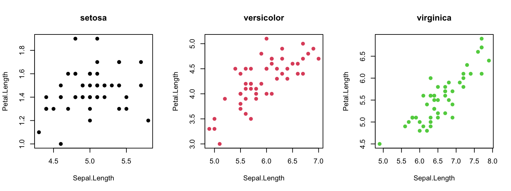

Module 8: Random Numbers, Apply, and Loops
Dai Shizuka
updated 10/03/19
In this module, we will go over several useful R tricks that make things faster…
8.1 Random number generators
The essence of stochasticity is that a parameter will vary randomly–but what do we mean by random!? If you think about it, there is an infinate number of ways to sample a random set of numbers1. Let’s consider some options:
8.1.1 Sampling from a given set of numbers with or without replacement.
We often want to generate a set of random number given some distribution. Say, for example, we want to sample randomly from a set of numbers. For example, let’s sample 5 integer between 1 and 10.
sample(1:10, 5, replace = F) #5 random numbers between 1 and 10## [1] 9 6 2 3 8You will probably notice that you have generated a different set of random numbers than what is shown here. This makes sense, but it makes it difficult to make this code reproducible. What we can do is to use set.seed() to make this process repeatable:
set.seed(2) #you can put whatever number inside set.seed()
sample(1:10, 5, replace = F) #5 random numbers between 1 and 10s## [1] 5 6 9 1 10When you run the code like this, you should always get “2, 7, 5, 10, 6”
Try changing the number inside the set.seed() and see what you get.
Note that we have used replace=F to indicate that, once we choose a number, we want to avoid choosing it again. This is akin to physically picking 5 cards out of a set of 10 at the same time. We can do that up to the sample size, but no more. So, this will work:
set.seed(2)
sample(1:10, 10, replace = F) #10 random numbers between 1 and 10## [1] 5 6 9 1 10 7 4 8 3 2But this will NOT work:
sample(1:10, 11, replace = F) #11 random numbers between 1 and 10## Error in sample.int(length(x), size, replace, prob): cannot take a sample larger than the population when 'replace = FALSE'In the first iteration, you have simply shuffled the order of the numbers. But you cannot shuffle 11 cards out of a deck of 10.
Compare this to the case when we set replace=TRUE:
set.seed(2)
sample(1:10, 10, replace = T) #10 random numbers between 1 and 10## [1] 5 6 6 8 1 1 9 2 1 3You will notice that we have chose some numbers multiple times (“2” appears three times, “10” and “6” appear twice). When you set replace=TRUE, we are basically simulating a situation where we choose a card, write down the number, and then put it back before picking up another card. This process is the essence of a simulation procedure called bootstrapping.
A quick recap:
sample(x, n)allows you to randomly sample n numbers from the setx.replace=F(default) means once you sample one number, you will not sample it again. You can use this to shuffle the order of numbers (generally called randomization)replace=Tallows for sampling a number more than once. You can use this to resample a set of numbers with equal probability (generally called bootstrapping)
8.1.2 Sampling from probability distributions
Rather than sampling from a discrete set of numbers, we might want to sample numbers from a given hypothetical distribution. As an illustration, let’s sample a set of 100 numbers from a normal distribution with mean of 0 and standard deviation of 1
set.seed(2)
rn = rnorm(10, mean = 0, sd = 1)
rn## [1] -0.89691455 0.18484918 1.58784533 -1.13037567 -0.08025176
## [6] 0.13242028 0.70795473 -0.23969802 1.98447394 -0.13878701You can see that it generates numbers with 8 digits. We can generate a histogram and check to see if the output of the rnorm() function really looks like a normal distribution. Let’s do it with 1,000 numbers so that we reduce sampling error.
set.seed(2)
hist(rnorm(1000, mean = 0, sd = 1), freq = F)
Looks about right.
Now let’s try the same thing but with a uniform distribution of numbers ranging from 0 to 1
set.seed(2)
runif(10, min = 0, max = 1)## [1] 0.1848823 0.7023740 0.5733263 0.1680519 0.9438393 0.9434750 0.1291590
## [8] 0.8334488 0.4680185 0.5499837hist(runif(1000, min = 0, max = 1), freq = F)
8.1.3 Coin-flips
We can use the rbinom() function to simulate coin-flips, i.e., generating 0s and 1s randomly.
- Flipping the coin 100 times, keeping track of result each time.
set.seed(2)
coin = rbinom(100, 1, prob = 0.5) #100 trials of a single flip of the coin
coin## [1] 0 1 1 0 1 1 0 1 0 1 1 0 1 0 0 1 1 0 0 0 1 0 1 0 0 0 0 0 1 0 0 0 1 1 1
## [36] 1 1 0 1 0 1 0 0 0 1 1 1 0 1 1 0 0 1 1 0 1 1 1 1 1 1 1 1 0 1 0 0 0 0 0
## [71] 0 0 0 0 0 1 0 1 0 1 0 1 0 0 0 1 1 0 1 0 1 0 0 1 0 0 0 0 0 0table(coin) #generate a table of results## coin
## 0 1
## 55 45sum(coin)/length(coin) #calculate probability of 1## [1] 0.45- Flipping the coin 100 times, but with skewed probability
set.seed(2)
flip = 100
coin4 = rbinom(100, 1, prob = 0.25)
table(coin4)## coin4
## 0 1
## 72 28- 10 trials of 100 fair coin flips
set.seed(2)
flips = 100
coin2 = rbinom(10, flips, prob = 0.5)
coin2## [1] 48 47 59 45 46 54 50 58 58 529.1.4 Table of probability distributions
| Distribution | Function to generate numbers |
|---|---|
| Beta | rbeta() |
| Binomial | rbinom() |
| Chi-square | rchisq() |
| Exponential | rexp() |
| Gamma | rgamma() |
| Geometric | rgeom() |
| Logistic | rlogis() |
| Log Normal | rlnorm() |
| Negative Binomial | rnbinom() |
| Normal | rnorm() |
| Poisson | rpois() |
| Uniform | runif() |
| Weibull | rweibull() |
8.2 The “apply-family” of functions
The “apply family” function–which includes apply(), sapply(), lapply() and tapply()–takes a series of elements and applies a given function to it. The function to be applied can be defined within the ‘apply’ function.
Each apply-family function varies slightly in its syntax or output format.
9.1.1 Applying a function to a set of elements using sapply() and lapply()
Here, we will use the sapply() function, which can take a series of elements, run a function on it, and then save the output in the simplest format (“s” in “sapply” is for “simplify”).
Let’s try out a really simple application:
sapply(1:5, function(x) x * 2)## [1] 2 4 6 8 10Here, what we did was to:
- Take each element of
1:10(integers from 1 to 10) and multiply each element by 2 - Store the output in the simplest form, which is a vector
Compare that with the lapply() function, which saves the output as a list.
lapply(1:5, function(x) x * 2)## [[1]]
## [1] 2
##
## [[2]]
## [1] 4
##
## [[3]]
## [1] 6
##
## [[4]]
## [1] 8
##
## [[5]]
## [1] 10Here’s another example:
var = c(1, 2, 3)
sapply(1:10, function(x) x * var)## [,1] [,2] [,3] [,4] [,5] [,6] [,7] [,8] [,9] [,10]
## [1,] 1 2 3 4 5 6 7 8 9 10
## [2,] 2 4 6 8 10 12 14 16 18 20
## [3,] 3 6 9 12 15 18 21 24 27 30What have we done here?
- Set up an object called
var, which is a vector of three numbers: 1, 2 and 3 - Then, take each element of
1:10and multiply byvar, which itself is 3 numbers. - Organize the results as a matrix, which is the simplest format to store a 2-dimensional set of numbers. In this case, there will be 3 rows of 10 numbers.
Again, compare this result with the output of lapply() (output not shown):
var = c(1, 2, 3)
lapply(1:10, function(x) x * var)So you can see that the output of sapply() is more user-friendly than the output of lapply() in general. However, lapply() is really useful when you want to apply a function whose output is not a neat set of values.
As an example, let’s use the lapply() function to run a linear regression on a list of dataframes. First, we will create such a list by “splitting” the familiar iris dataset by species (output not shown):
iris.list = split(iris, iris$Species)
iris.listNow we have a list object with three dataframes. Let’s now use the lapply() function to conduct the same linear regression model Petal.Length~Sepal.Length on each dataset. The output will be the anova() tables that show the F-statistic and overall model fits.
lapply(iris.list, function(x) anova(lm(Petal.Length ~ Sepal.Length,
data = x)))## $setosa
## Analysis of Variance Table
##
## Response: Petal.Length
## Df Sum Sq Mean Sq F value Pr(>F)
## Sepal.Length 1 0.10549 0.10549 3.6898 0.0607 .
## Residuals 48 1.37231 0.02859
## ---
## Signif. codes: 0 '***' 0.001 '**' 0.01 '*' 0.05 '.' 0.1 ' ' 1
##
## $versicolor
## Analysis of Variance Table
##
## Response: Petal.Length
## Df Sum Sq Mean Sq F value Pr(>F)
## Sepal.Length 1 6.1521 6.1521 63.263 2.586e-10 ***
## Residuals 48 4.6679 0.0972
## ---
## Signif. codes: 0 '***' 0.001 '**' 0.01 '*' 0.05 '.' 0.1 ' ' 1
##
## $virginica
## Analysis of Variance Table
##
## Response: Petal.Length
## Df Sum Sq Mean Sq F value Pr(>F)
## Sepal.Length 1 11.1471 11.1471 141.64 6.298e-16 ***
## Residuals 48 3.7777 0.0787
## ---
## Signif. codes: 0 '***' 0.001 '**' 0.01 '*' 0.05 '.' 0.1 ' ' 1You can see that the three species vary in their relationships between sepal length and petal length. Here’s one way to visualize it:
par(mfrow = c(1, 3))
plot(Petal.Length ~ Sepal.Length, data = iris.list[[1]], pch = 19,
col = 1, main = "setosa")
plot(Petal.Length ~ Sepal.Length, data = iris.list[[2]], pch = 19,
col = 2, main = "versicolor")
plot(Petal.Length ~ Sepal.Length, data = iris.list[[3]], pch = 19,
col = 3, main = "virginica")8.2.2 tapply() (and comparing it to aggregate())
The tapply() function applies a function to a set of values that are grouped by some factor. This is pretty much the same as the aggregate() function, but the output format is different. As a demo, let’s first set up a dataframe:
fac = c(rep("A", 4), rep("B", 4), rep("C", 4))
num = 1:12
dat = data.frame(num, fac)
dat## num fac
## 1 1 A
## 2 2 A
## 3 3 A
## 4 4 A
## 5 5 B
## 6 6 B
## 7 7 B
## 8 8 B
## 9 9 C
## 10 10 C
## 11 11 C
## 12 12 CNow, we’ll sum the values associated each factor (A, B or C). We’ll do this using tapply() and aggregate() and compare the outputs:
tapply(dat$num, list(dat$fac), sum)## A B C
## 10 26 42aggregate(num, list(fac = fac), sum)## fac x
## 1 A 10
## 2 B 26
## 3 C 428.2.3 Working with arrays using apply()
The apply() function is useful when you want to apply a function on an array (i.e., an n-dimensional set of numbers). Here, the syntax is apply(X, MARGIN, FUN, …), where X is a matrix or array, MARGIN is the direction in which the function will applied—for a matrix, MARGIN=1 indicates rows, and MARGIN=2 indicates columns. For example:
m = matrix(1:20, nrow = 5, byrow = TRUE)
m## [,1] [,2] [,3] [,4]
## [1,] 1 2 3 4
## [2,] 5 6 7 8
## [3,] 9 10 11 12
## [4,] 13 14 15 16
## [5,] 17 18 19 20apply(m, 1, sum) #sum the rows## [1] 10 26 42 58 74apply(m, 2, sum) #sum the columns## [1] 45 50 55 60Or you can set the margin to c(1,2) to apply a function to row/column combinations (i.e., each cell)
apply(m, c(1, 2), function(x) x^2)## [,1] [,2] [,3] [,4]
## [1,] 1 4 9 16
## [2,] 25 36 49 64
## [3,] 81 100 121 144
## [4,] 169 196 225 256
## [5,] 289 324 361 400Where apply() really shines is when working with larger-dimensional arrays. For example, consider a 3x4x5 3-D array.
 We can sum across each of those dimensions:
We can sum across each of those dimensions:
a = array(1:60, dim = c(5, 4, 3))
apply(a, 1, sum)## [1] 342 354 366 378 390apply(a, 2, sum)## [1] 345 420 495 570apply(a, 3, sum)## [1] 210 610 1010apply(a, c(1, 2), sum)## [,1] [,2] [,3] [,4]
## [1,] 63 78 93 108
## [2,] 66 81 96 111
## [3,] 69 84 99 114
## [4,] 72 87 102 117
## [5,] 75 90 105 1208.3 For-Loops
A “for loop” is another way to repeat a function or series of functions many times. The idea here is to request that an index (e.g., i) take on a series of values, and that a lines of commands are executed as many times as there are different values of i.
8.3.1 Simple examples of for-loops
Here’s a simple example for just repeating a command 5 times:
for (i in 1:5) print(i * 2)## [1] 2
## [1] 4
## [1] 6
## [1] 8
## [1] 10Sometimes, it is useful to store the results of a loop to an object. Here, let’s repeat the above command, but we will save the result as a vector. To do this, we will have to first create an empty vector and then request that the output of the command is stored in order. Here, I recommend that you first establish the number of iterations you want to run the command. You’ll see what you mean here:
times = 5
v = numeric(length = times)
for (i in 1:times) v[i] = i * 2
v## [1] 2 4 6 8 10Let’s try combining a for-loop with sample(). Let’s generate a random sequence of integers from 1 through 10, and do that 5 times. We will store the result of each iteration in a row of a matrix (the final matrix should be 5 rows of 10 columns).
set.seed(2)
times = 5
m = matrix(nrow = times, ncol = 10)
for (i in 1:times) {
m[i, ] = sample(1:10, 10, replace = F)
}
m## [,1] [,2] [,3] [,4] [,5] [,6] [,7] [,8] [,9] [,10]
## [1,] 5 6 9 1 10 7 4 8 3 2
## [2,] 1 3 6 2 9 10 7 5 4 8
## [3,] 6 9 10 5 8 3 1 7 2 4
## [4,] 6 2 7 9 3 4 10 1 5 8
## [5,] 9 1 2 4 5 6 7 8 10 3Mini-exercise: What do you think this code will produce (note where I put the set.seed() function)
times = 5
m = matrix(nrow = times, ncol = 10)
for (i in 1:times) {
set.seed(2)
m[i, ] = sample(1:10, 10, replace = F)
}
m8.3.2 Practice with for-loops: The P-value
Let’s use the for loop to illustrate a statistical paradigm: the p-value. The p-value is the probability of obtaining a result if the null hypothesis is true. Let’s investigate this case for the p-value generated from a Pearson’s correlation coefficient. Let’s start by testing the correlation between two random sets of values drawn from normal distributions:
set.seed(2)
r1 = rnorm(100)
r2 = rnorm(100)
test = cor.test(r1, r2)
test##
## Pearson's product-moment correlation
##
## data: r1 and r2
## t = -0.54989, df = 98, p-value = 0.5836
## alternative hypothesis: true correlation is not equal to 0
## 95 percent confidence interval:
## -0.2491651 0.1425093
## sample estimates:
## cor
## -0.05546129What we have done is see if two sets of random numbers are correlated. As expected, we have a low correlations coefficient and high P-value.
However, what if we did this test a bunch of times? We should get a “significant correlation” (P<0.05) 5% of the time. Let’s try this and see if that’s true. What we can do is to repeat the above routine a large number of times (here, 10,000x) and ask how often the p-value from that test is less than or equal to 0.05. The results will be a series of TRUE/FALSE. We can look at the proportion of iterations in which the answer was TRUE.
times = 10000
set.seed(2)
results = vector(length = times)
cor.coefs = vector(length = times)
for (i in 1:times) {
r1 = rnorm(100)
r2 = rnorm(100)
test = cor.test(r1, r2)
p = test$p.value
results[i] = p <= 0.05
}
sum(results + 0)## [1] 508You should have a value close to 500. That is, if you repeat the test 10,000 times on two random sets of numbers, you will get a ‘significant’ result 500 times.
Strictly speaking, we can only generate pseudo-random numbers–the computer can use an algorithm that generates numbers that are indistinguishable from random, but it is not truly random as long as we are using some algorithm to generate it.↩